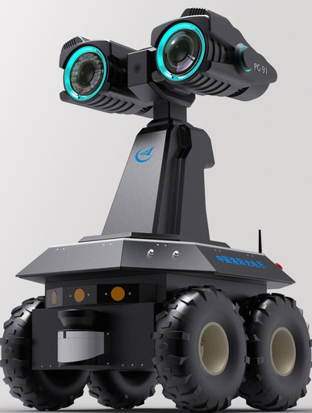

Origin
PROPOES A CONCEPT
Artificial intelligence (AI) has been one of the most controversial domains of inquiry in computer science since it was first proposed in the 1950s. Defined as the part of computer science concerned with designing systems that exhibit the characteristics associated with human intelligence—understanding language, learning, reasoning, solving problems, and so on (Barr and Feigenbaum, 1981)—the field has attracted researchers because of its ambitious goals and enormous underlying intellectual challenges. The field has been controversial because of its social, ethical, and philosophical implications. Such controversy has affected the funding environment for AI and the objectives of many research programs.
AI research is conducted by a range of scientists and technologists with varying perspectives, interests, and motivations. Scientists tend to be interested in understanding the underlying basis of intelligence and cognition, some with an emphasis on unraveling the mysteries of human thought and others examining intelligence more broadly. Engineeringoriented researchers, by contrast, are interested in building systems that behave intelligently. Some attempt to build systems using techniques analogous to those used by humans, whereas others apply a range of techniques adopted from fields such as information theory, electrical engineering, statistics, and pattern recognition. Those in the latter category often do not necessarily consider themselves AI researchers, but rather fall into a broader category of researchers interested in machine intelligence.
THE PRIVATE SECTOR LAUNCHES THE FIELD
The origins of AI research are intimately linked with two landmark papers on chess playing by machine.2 They were written in 1950 by Claude E. Shannon, a mathematician at Bell Laboratories who is widely acknowledged as a principal creator of information theory. In the late 1930s, while still a graduate student, he developed a method for symbolic analysis of switching systems and networks (Shannon, 1938), which provided scientists and engineers with much-improved analytical and conceptual tools. After working at Bell Labs for half a decade, Shannon published a paper on information theory (Shannon, 1948). Shortly thereafter, he published two articles outlining the construction or programming of a computer for playing chess (Shannon, 1950a,b).
Shannon’s work inspired a young mathematician, John McCarthy, who, while a research instructor in mathematics at Princeton University, joined Shannon in 1952 in organizing a conference on automata studies, largely to promote symbolic modeling and work on the theory of machine intelligence.3 A year later, Shannon arranged for McCarthy and another future pioneer in AI, Marvin Minsky, then a graduate student in mathematics at Princeton and a participant in the 1952 conference, to work with him at Bell Laboratories during 1953.4
By 1955, McCarthy believed that the theory of machine intelligence was sufficiently advanced, and that related work involved such a critical mass of researchers, that rapid progress could be promoted by a concentrated summer seminar at Dartmouth University, where he was then an assistant professor of mathematics. He approached the Rockefeller Foundation’s Warren Weaver, also a mathematician and a promoter of cutting-edge science, as well as Shannon’s collaborator on information theory. Weaver and his colleague Robert S. Morison, director for Biological and Medical Research, were initially skeptical (Weaver, 1955). Morison pushed McCarthy and Shannon to widen the range of participants and made other suggestions. McCarthy and Shannon responded with a widened proposal that heeded much of Morison’s advice. They brought in Minsky and a well-known industrial researcher, Nathaniel Rochester5 of IBM, as co-principal investigators for the proposal, submitted in September 1955.6
In the proposal, the four researchers declared that the summer study was “to proceed on the basis of the conjecture that every aspect of learning or any other feature of intelligence can in principle be so precisely described that a machine can be made to simulate it.” They sought to bring a number of U.S. scholars to Dartmouth to create a research agenda for AI and begin actual work on it. In spite of Morison’s skepticism, the Rockefeller Foundation agreed to fund this summer project with a grant of $7,500 (Rhind, 1955), primarily to cover summer salaries and expenses of the academic participants. Researchers from industry would be compensated by their respective firms.
Although most accounts of AI history focus on McCarthy’s entrepreneurship, the role of Shannon—an intellectual leader from industry—is also critical. Without his participation, McCarthy would not have commanded the attention he received from the Rockefeller Foundation. Shannon also had considerable influence on Marvin Minsky. The title of Minsky’s 1954 doctoral dissertation was “Neural Nets and the Brain Model Problem.”
The role of IBM is similarly important. Nathan Rochester was a strong supporter of the AI concept, and he and his IBM colleagues who attended the 1956 Dartmouth workshop contributed to the early research in the field. After the workshop IBM welcomed McCarthy to its research laboratories, in large part because of IBM’s previous work in AI and because “IBM looked like a good bet to pursue artificial intelligence research vigorously” in the future.7 Rochester was a visiting professor at the Massachusetts Institute of Technology (MIT) during 1958-1959, and he unquestionably helped McCarthy with the development of LISP, an important list-processing language (see Box 9.1).8 Rochester also apparently lent his support to the creation in 1958 of the MIT Artificial Intelligence Project (Rochester and Gelertner, 1958).9 Yet, in spite of the early activity of Rochester and other IBM researchers, the corporation’s interest in AI cooled. Although work continued on computer-based checkers and chess, an internal report prepared about 1960 took a strong position against broad support for AI.
Thus, the activities surrounding the Dartmouth workshop were, at the outset, linked with the cutting-edge research at a leading private research laboratory (AT&T Bell Laboratories) and a rapidly emerging industrial giant (IBM). Researchers at Bell Laboratories and IBM nurtured the earliest work in AI and gave young academic researchers like McCarthy and Minsky credibility that might otherwise have been lacking. Moreover, the Dartmouth summer research project in AI was funded by private philanthropy and by industry, not by government. The same is true for much of the research that led up to the summer project.
THE GOVERNMENT STEPS IN
The federal government’s initial involvement in AI research was manifested in the work of Herbert Simon and Allen Newell, who attended the 1956 Dartmouth workshop to report on “complex information processing.” Trained in political science and economics at the University of Chicago, Simon had moved to Carnegie Institute of Technology in 1946 and was instrumental in the founding and early research of the Graduate School of Industrial Administration (GSIA). Funded heavily by the Ford Foundation and the Office of Naval Research (ONR), and the Air Force, GSIA was the pioneer in bringing quantitative behavioral social sciences research (including operations research) into graduate management education.10 Because of his innovative work in human decision making, Simon became, in March 1951, a consultant to the RAND Corporation, the pioneering think tank established by the Air Force shortly after World War II.11
At RAND, where he spent several summers carrying out collaborative research, Simon encountered Newell, a mathematician who helped to conceive and develop the Systems Research Laboratory, which was spun out of RAND as the System Development Corporation in 1957. In 1955, Simon and Newell began a long collaboration on the simulation of human thought, which by the summer of 1956 had resulted in their fundamental work (with RAND computer programmer J.C. Shaw) on the Logic Theorist, a computer program capable of proving theorems found in the Principia of Bertrand Russell and Alfred North Whitehead (Newell and Simon, 1956).12
This program is regarded by many as the first successful AI program, and the language it used, IPL2, is recognized as the first significant listprocessing language. As programmed by Simon, Newell, and Shaw, a computer simulated human intelligence, solving a problem in logic in much the same way as would a skilled logician. In this sense, the machine demonstrated artificial intelligence. The project was funded almost entirely by the Air Force through Project RAND, and much of the computer programming was done at RAND on an Air Force-funded computer (the Johnniac, named after RAND consultant John von Neumann, the creator of the basic architecture for digital electronic computers).13
Newell’s collaboration with Simon took him to Carnegie Tech, where, in 1957, he completed the institution’s first doctoral dissertation in AI, “Information Processing: A New Technique for the Behavioral Sciences.” Its thrust was clearly driven by the agenda laid out by the architects of GSIA. As Newell later stressed, his work with Simon (and that of Simon’s several other AI students at GSIA) reflected the larger agenda of GSIA, even though most of this work was funded by the Air Force and ONR until the early 1960s. All of this work concentrated on the formal modeling of decision making and problem solving.
Simon and Newell developed another well-known AI program as a sequel to Logic Theorist—the General Problem Solver (GPS), first run in 1957 and developed further in subsequent years. Their work on GPS, like that on Logic Theorist, was characterized by its use of heuristics (i.e., efficient but fallible rules of thumb) as the means to simulate human cognitive processes (Newell et al., 1959). The GPS was capable of solving an array of problems that challenge human intelligence (an important accomplishment in and of itself), but, most significantly, it solved these problems by simulating the way a human being would solve them. These overall research efforts at GSIA, including the doctoral research of Simon’s students—all funded principally by Air Force and ONR money—remained modest in scale compared to those at Carnegie Tech after 1962.14
Also modest were the efforts at MIT, where McCarthy and Minsky established the Artificial Intelligence Project in September 1957. This effort was funded principally through a word-of-mouth agreement with Jerome Wiesner, then director of MIT’s military-funded Research Laboratory in Electronics (RLE). In exchange for “a room, two programmers, a secretary and a keypunch [machine],” the two assistant professors of mathematics agreed, according to McCarthy, to “undertake the supervision of some of the six mathematics graduate students that RLE had undertaken to support.”15
The research efforts at Carnegie Tech (which became Carnegie Mellon University [CMU] in 1967), RAND, and MIT, although limited, yielded outstanding results in a short time. Simon and Newell showed that computers could demonstrate human-like behavior in certain well-defined tasks.16 Substantial progress was also made by McCarthy, with his pioneering development of LISP, and Minsky, who formalized heuristic processes and other means of reasoning, including pattern recognition.
Previously, computers had been used principally to crunch numbers, and the tools for such tasks were primitive. The AI researchers found ways to represent logical formulas, carry out proofs, conduct plans, and manipulate such objects. Buoyed by their successes, researchers at both institutions projected bold visions—which, as the research was communicated to the public, became magnified into excessive claims—about the future of the new field of AI and what computers might ultimately achieve.17